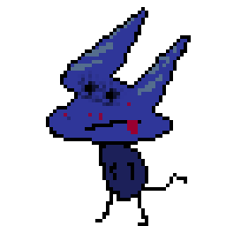

Rucu Pashi
(Mateo Velasco)
Ecuador - Argentina
Estudiante de Artes Multimediales e Informática
Programador/Diseñador
Experiencia en código, sonido, edición audiovisual, desarrollo de videojuegos y web.
Medios:
Email: rucupashistudio@gmail.com
IG: @rucupashi